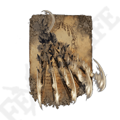
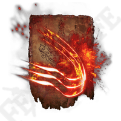
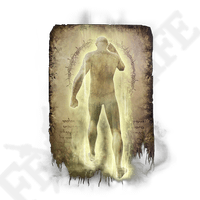

| Name: |
Effect: |
Req. Level: |
Duration: |
|  Beast Claw |
From the caster a 15ft cone of sharp rock claws rend any being in it's AOE dealing 1D6+CL damage. |
1 |
- |
Bestial Constitution |
Reduces save DC of hostile magical effects by 1+CL(Max. 9). |
1 |
2 Rounds |
Bestial Sling |
From the caster a 25ft cone of CL sharp rock projectiles are fired, each dealing 1D6 damage. |
2 |
- |
Bestial Vitality |
Heals the caster 2HP each turn. |
2 |
CL Rounds |
Stone of Gurranq |
Make a single ranged attack with +6TH, on a succesful hit deals 2D6 damage, on crit target is knocked prone(crit on 17-20). |
3 |
- |
Gurranq's Beast Claw |
From the caster a 20ft. cone of sharp rock claws rends any being in it's AOE dealing CL*D6 damage. |
4 |
- |
Blood Boon |
Deals 2D6+CL fire damage to anyone in a 15ft. cone before the caster, all hit targets must succeed a DC16 saving throw, on a failed save healing is prevented for CL Rounds. |
2 |
- |
Bloodflame Blade |
Whenever affected weapon deals damage it deals an additional 1D8 points of fire damage to that target and healing is prevented for CL Rounds. |
3 |
- |
|  Bloodflame Talons |
Perform a sweeping slash causing all within a 5ft. cone to take 1D4 fire damage, then 3 consecutive 5ft. radius explosions go of each with a DC12 reflex save that if failed deal 1D8 fire damage and block healing for 1 round. |
3 |
- |
Swarm of Flies |
All targets within a 10ft. radius before the caster have their healing blocked and AC reduced by 3 for however long they remain in the cloud + CL/2 Rounds. |
3 |
- |
|
[All dragon incantations use both movement and bonus action for charge-up.] |
|
Dragonfire |
Creates a 30ft. cone of fire before the caster dealing 2D8 + CL fire damage to all targets. |
2 |
- |
Dragonice |
Creates a 30ft. cone of ice before the caster dealing 2D8 + CL cold damage to all targets. |
2 |
- |
Dragonclaw |
Make a +6TH melee attack to deal CL*D6 damage. |
3 |
- |
Dragonmaw |
Make a +6TH grapple to deal CL*D6-3 damage, the target becomes grappled. |
3 |
- |
Rotten Breath |
Creates a 30ft. cone of rot before the caster dealing 1D6 damage each turn to all targets. |
3 |
CL Rounds |
Glintstone Breath |
Creates a 30ft. cone of magic before the caster dealing 2D6 damage to all targets. Until the casters next turn all magic-source damage against those targets is increased by 1 dice. |
3 |
- |
Magma Breath |
Creates a 30ft. cone of magic before the caster dealing 1D6 fire damage to all targets, the area becomes then covered in magma dealing 1D4 fire damage each turn to anyone standing in it. |
3 |
2 Rounds |
 Agheel's Flame |
Creates a 40ft. cone of fire before the caster dealing 3D8 + CL fire damage to all targets. |
3 |
- |
Borealis's Mist |
Creates a 40ft. cone of ice before the caster dealing 3D8 + CL cold damage to all targets. |
3 |
- |
Ekzykes's Decay |
Creates a 40ft. cone of rot before the caster dealing 2D6 damage each turn to all targets. |
4 |
CL Rounds |
Smarag's Glintstone Breath |
Creates a 35ft. cone of magic before the caster dealing 3D6 damage to all targets. Until the casters next turn all magic-source damage against those targets is increased by 2 dice. |
4 |
- |
Theodorix's Magma |
Creates a 40ft. cone of magma before the caster dealing 2D6 fire damage to all targets, the area becomes then covered in magma dealing 2D4 fire damage each turn to anyone standing in it. |
4 |
4 Rounds |
Greyoll's Roar |
All targets in a 35ft. radius must succeed a DC16 CON save or take 5D6 sonic damage, on a succesful save they take 2D6 damage instead. |
4 |
- |
Placidusax's Ruin |
Create 2 rays of powerful energy capable of penetrating multiple enemies and cover/armor, dealing CL*D8 magic damage on hit. |
6 |
- |
|
Electrify Armament |
Whenever affected weapon deals electric type damage it deals an additional (caster level) points of electricity damage to that target. |
2 |
2 Rounds |
Lightning Spear |
Deals 2D6 + Int mod electricity damage from above to a target within 30ft. |
2 |
- |
Lightning Strike |
Choose a point of impact within 15ft. you can see, from impact up to 6(caster level) bolts of lightning appear. On hit these deal 2D6 + Int mod damage. |
2 |
- |
Ancient Dragon's Lightning Spear |
Deals 2D8+CL electricity damage from above to a target within 40ft. |
3 |
- |
Ancient Dragon's Lightning Strike |
Choose a point of impact within 15ft. you can see, from impact each target in a 15ft. radius must roll a D10, if rolled below 5 they take 3D6 electricity damage from above. |
4 |
- |
Death Lightning |
Each target in a 15ft. radius around the caster must roll a D10, if rolled below 5 they take 1D6 electricity damage from above, they must then succeed a DC14 CON save or get a failed death save. |
4 |
- |
Dragonbolt Blessing |
Caster becomes immune to electricity damage and electricity-based attacks made by the caster deal CL additional damage. |
4 |
3 Rounds |
Fortissax's Lightning Spear |
Deals 2X 2D8+CL electricity damage from above to up to two targets within 40ft. |
4 |
- |
Frozen Lightning Spear |
Deals 2D6 + Int mod electricity damage and 1D6 cold damage from above to a target within 30ft. |
4 |
- |
Honed Bolt |
Deals CL*D4 electricity damage from above to a target within 40ft. |
5 |
- |
Lansseax's Glaive |
Make a +CLTH melee attack against a target, dealing 3D8 electricity damage. |
6 |
- |
Vyke's Dragonbolt |
Whenever affected weapon deals electric type damage it deals an additional CL*D4 of electricity damage to that target. |
6 |
2 Rounds |
 Aspect of the Crucible: Breath |
Until end of turn, while moving you may spray a 5ft. cone of fire in front of you, dealing 2D6 fire damage on hit. |
3 |
- |
Aspect of the Crucible: Horns |
Charge up to 10ft. forward, then if you are in close quarters with a target. Make a +8TH melee attack dealing 2D8 piercing damage. |
3 |
- |
Aspect of the Crucible: Tail |
All targets in a 5ft. radius around the caster that aren't flying must succeed a DC15 Reflex save or take 1D6 damage and be knocked prone. |
4 |
- |
 Barrier of Gold |
All magic-save DC is lowered by 5 for caster and allies within 10ft. |
4 |
CL Rounds |
 Blessing's Boon |
Heals 1HP each turn for caster and allies within 10ft. |
4 |
CL(Max. 6) Rounds |
Golden Vow |
Weapons of caster and allies within 15ft. are treated as +2 weapons. |
- |
CL Rounds |
Black Blade |
Fire a magic projectile with a max. range of 30ft. that on impact with a target deals 2D8+CL damage and reduces that target's maximum HP by the same amount. |
5 |
- |
Blessing of the Erdtree |
Heals 4HP each turn for caster and allies within 10ft. |
6 |
CL(Max. 6) Rounds |
 Golden Lightning Fortification |
Caster and allies within 10ft. become immune to electricity damage and electricity-based attacks made by them deal CL additional damage. |
6 |
3 Rounds |
Elden Stars |
(Uses movement for charge-up), Creates a homing bolt of magic that moves 2.5ft. each turn and deals 3D8 damage on hit, while traveling the bolt shoots CL bolts of fast traveling magic each dealing 1D4 damage. |
7 |
- |
Erdtree Heal |
Heals caster and allies within 15ft. for CL*D6 HP. |
7 |
- |
Protection of the Erdtree |
Caster and allies within 10ft. take only half damage from elemental damage. |
7 |
CL Rounds |
Wrath of Gold |
Creates a 25ft. radius shockwave centered around the caster, each target within the radius must succeed a DC20 Reflex save or be pushed back 10ft. and knocked prone. |
8 |
- |
Burn O Flame |
Each target in a 20ft. radius around the caster must roll a D10, if rolled below 5 they take 2D6 fire damage each turn. |
3 |
1D6 Rounds |
Flame Fall Upon Them |
In a 25ft. semi-circle before the caster all targets must succeed a DC15 Reflex save or take 3D6 fire damage. |
4 |
- |
Giantsflame Take Thee |
(Uses movement for charge-up), Creates a large fireball with a range of 40ft. on impact it deals 4D8+CL fire damage in a 10ft. radius. |
4 |
- |
Flame of the Fell God |
(Uses movement and bonus action for charge-up), Creates a massive fireball with a range of 50ft. on impact it deals CL*D8 fire damage in a 20ft. radius. |
6 |
- |
Flame Sling |
Creates a fireball with a range of 25ft. on impact it deals 1D6+CL fire damage in a 5ft. radius. |
1 |
- |
 Surge O Flame |
Creates a 10ft. stream of fire from the casters hand dealing 1D6 fire damage for each turn spent in it. |
2 |
Concentration |
Flame, Cleanse Me |
Cures caster of (curable) poisons, diseases and curses. |
3 |
- |
Flame, Grant Me Strength |
For up to 5(caster level) turns, fire and physical damage dealt by the caster is increased by 1 dice. |
4 |
CL(Max. 5) Rounds |
Flame, Protect Me |
For up to 5(caster level) turns, fire damage dealt to the caster is halved. |
4 |
CL(Max. 5) Rounds |
Catch Flame |
Make a +5TH unarmed melee attack, on hit it deals CL*D4 fire damage. |
4 |
- |
O, Flame |
Make a +5TH unarmed melee attack, on hit it deals CL*D6 fire damage. |
5 |
- |
Whirl O Flame |
Creates a 15ft. wide arc of fire before the caster dealing 1D6+CL fire damage on hit. |
5 |
- |
Fire's Deadly Sin |
Creates a 5ft. radius burst of fire dealing 1D8 fire damage, caster is then lit on fire, dealing 1D4 damage to the caster and anyone touched each turn, while on fire, caster's fire attacks deal +4 damage. |
5 |
10 Rounds |
|
[Frenzy spell effects after ||| also apply to the caster. If a target gets to 4 frenzy stacks they go back to zero and they become staggered, lose CL*2 HP
and for up to 5(caster level) turns all rolls are made with disadvantage.] |
|
The Flame of Frenzy |
Creates a bolt of fire that on hit deals 1D4 fire damage. ||| On hit target must succeed a DC13 Will save or get a frenzy stack. |
1 |
- |
Inescapable Frenzy |
Perform a +3TH grapple on an enemy within melee range. ||| On success the target must succeed a DC12 Will save or get 3 frenzy stacks. |
2 |
- |
Howl of Shabriri |
Caster's attacks deal +CL damage. ||| All targets within 20ft. must succeed a DC13 Will save or get a frenzy stack. |
3 |
- |
Frenzied Burst |
Make a +6TH ranged attack with a range of 60ft. that deals 3D4 fire damage on hit. ||| On hit target must succeed a DC13 Will save or get a frenzy stack. |
3 |
- |
Unendurable Frenzy |
All targets in a 20ft. cone in front of the caster must succeed a DC15 Reflex save or take 2D4 fire damage. ||| All hit must succeed a DC13 Will save or get a frenzy stack. |
5 |
Concentration |
|
 Noble Presence |
Creates a 10ft. shockwave centered on the caster dealing 1D4 damage to anyone within range and pushing them back 10ft. |
2 |
- |
Black Flame |
Creates a fireball with a range of 20ft. on impact it drains 1% of max HP(rounded up) each turn in a 5ft. radius. |
3 |
CL(Max. 10) Rounds |
Black Flame Blade |
Whenever affected weapon deals damage it deals an additional 1% of max HP(rounded up) to that target. |
4 |
2 Rounds |
Black Flame Ritual |
All targets in a 15ft. radius around the caster lose 1% of max HP(rounded up) each turn. |
5 |
CL(Max. 8) Rounds |
Black Flame Protection |
Physical damage dealt to the caster is halved. |
6 |
5 Rounds |
 Scouring Black Flame |
Creates a 15ft. wide arc of black fire before the caster on impact it drains 1% of max HP(rounded up) each turn. |
7 |
CL(Max. 8) Rounds |
Discus of Light |
Make a +6TH ranged attack that deals CL radiant damage that passes through targets, if next turn the target hasn't moved they take the damage again. |
1 |
- |
Triple Rings of Light |
Make 3 +6TH ranged attacks that deals CL radiant damage that passes through targets, if next turn the target hasn't moved they take the damage again. |
2 |
- |
Order's Blade |
Whenever affected weapon deals damage it deals an additional CL*D4 radiant damage. |
3 |
2 Rounds |
Immutable Shield |
Caster's equipped shield's AC bonus is doubled. |
4 |
5(caster level) Rounds |
Law of Causality |
After casting this spell, whenever caster is dealt damage for the third time since casting, the attacker is dealt CL*D6 radiant damage. |
4 |
CL Rounds |
Law of Regression |
Heals all negative effects within 15ft. around the caster for the caster and allies. |
4 |
- |
 Lithany of Proper Death |
Creates a 15ft. wide 10ft. long shockwave that deals 1D6 Radiant damage and destroys most undead. |
6 |
- |
Order Healing |
Removes 1 failed death-save for caster or ally within 5ft. |
6 |
- |
Radagon's Rings of Light |
Creates a 30ft. radius shockwave centered on the caster, all non-flying targets within range take CL*D6 radiant damage. |
6 |
- |
Pest Threads |
Creates CL threads before the caster that home in on the target dealing 2 damage on hit. |
2 |
- |
Poison Armament |
Whenever affected weapon deals damage it deals an additional 2 points of poison damage each turn for CL turns to that target. |
3 |
2 Rounds |
Poison Mist |
Creates a 5ft. radius cloud of poison before the caster dealing 2 points of poison damage each turn while in it or for CL rounds after leaving. |
4 |
5 Rounds |
Scarlet Aeonia |
(Uses movement and bonus action for charge-up), Leap 10ft. into the air, then dash down to a point within 20ft. on point of impact in a 15ft. radius all targets take CL damage and 1D8 damage each turn. |
8 |
CL Rounds |
|
Sorceries: |
|
Rejection |
Pushes back 5ft. anyone within 5ft. of the caster. |
1 |
- |
Urgent Heal |
[Bonus action], heals the caster 1D6 HP. |
1 |
- |
|  Assassins Approach |
For 2 rounds, caster gains a +5 and advantage on all stealth checks. |
2 |
2 |
Darkness |
Creates a 5ft. radius cloud of black smoke that is impossible to see through for anyone beside the caster. |
2 |
- |
Shadow Bait |
Creates a 45ft. range invisible projectile that draws attention to its point of impact. |
3 |
- |
Oracle Bubbles |
Create CL bubbles moving 5ft. each turn with a range of 60ft. that deal 1D4+CL damage on hit, and remove all dirt and grime from target. |
2 |
- |
Great Oracular Bubble |
Create a bubble moving 5ft. each turn with a range of 60ft. that deal 2D10+CL damage on hit, and removes all dirt and grime from target. |
3 |
- |
Rancorcall |
Creates a homing bolt that moves 10ft. each turn towards its target, on hit(if not blocked) it deals 1D6 damage and gives 1 failed death-save. |
5 |
- |
Ancient Death Rancor |
Creates a homing bolt that moves 15ft. each turn towards its target, on hit(if not blocked) it deals 2D6 damage and gives 2 failed death-saves. |
7 |
- |
Explosive Ghostflame |
Creates a 15ft. radius explosion centered on the caster, anyone caught in the blast must succeed a DC17 CON save or get 1 failed death-save. |
8 |
- |
Fia's Mist |
Creates a 5ft. radius cloud of mist before the caster, all who start or end their turn in the mist must succeed a DC17 CON save or get 1 failed death-save. |
9 |
5 Rounds |
Tibia's Summons |
Choose a target within 35ft. you can see, next turn those who live in death drag said target to oblivion, gear and all. |
9 |
- |
Ranni's Dark Moon |
Create a moon shaped projectile moving 10ft. each turn towards its target, on hit it deals Int mod*D10 cold damage and the target takes CL bonus damage from magic. |
7 |
2 Rounds |
Terra Magicka |
Creates a 5ft. wide magical mark on the ground below the caster, any magic cast while standing on the mark may add 1 dice to the spell. |
4 |
4 Rounds |
Thops's Barrier |
Creates a barrier before the caster that deflects any spell back towards its caster as long as the spell DC is lower than the barrier's caster's CL + 10. |
2 |
Concentration |
 Meteorite of Astel |
15ft. above the caster a portal opens from where each turn 2D4 projectiles launch forth striking random spots within a 15ft.x20ft. area before the caster, each projectile dealing CL*D6 damage on hit. |
8 |
Concentration |
Ambush Shard |
Choose a target you can see within 35ft., a magic bolt launches at said target from behind them, dealing 1D4+CL damage on hit. |
2 |
- |
Eternal Darkness |
5ft. above the caster a portal opens sucking in all spells that come within 5ft. of the portal. |
3 |
4 Rounds |
Unseen Blade |
Caster's weapon becomes undetectable and cannot be found by others when searching for weapons. |
3 |
CL Rounds |
Night Maiden's Mist |
Creates a 5ft. radius cloud of mist before the caster, all who start or end their turn in the mist take 1D4 damage for each turn they have spend in it. |
6 |
5 Rounds |
Founding Rain of Stars |
Choose a point within 45ft. you can see, above that point a massive 30ft. radius cloud appears raining magic bolts down at random, on hit each bolt deals 1D6+Int mod damage. |
8 |
CL Rounds |
 Comet Azur |
Fire a 40ft. range beam of pure magic, dealing CL*D12 damage to anyone starting or ending their turn in it. |
10 |
Concentration, max, CL(Max. 8) Rounds |
|
[Briar Sorceries deal 12 damage to the caster on cast. if a target gets to 8 bleed stacks they go back to zero and they lose 10% of maximum HP.] |
|
Briars of Sin |
Deals 1D4 damage to all targets in a 5ft. radius and applies 1 bleed stack. |
1 |
- |
 Briars of Punishment |
Deals 2D4 damage to all targets in a 10ft. radius and applies 1 bleed stack. |
2 |
- |
|
Custom Spells: |
|